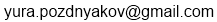
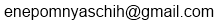

Back
Русский
Matreshki vs Androids
History
Androids got out of control and captured all Google Developer Day 2011 hosting locations except Moscow. The only way to save the feast is to use the Russian matreshki to fix the androids up before all the GDD hosting locations are captured.
Goals of the game
- Secure all Google Developer Day hosting locations
- Don't let the Androids capture all the Google Developer Day hosting locations
Game rules
- 2 players participate in the game: human vs computer
- The human player controls the matreshki
- The computer player controls the androids
- The game map is split into 25 areas
- Each area is under the control of some player initially:
- Moscow area is under the control of the matreshki
- Other Google Developer Day hosting areas are under the control of the androids
- The remaining areas are randomly split among both players, in a 3:1 ratio (androids:matreshki)
- There is a unit in each area: either a matreshka or an android
- Units have different sizes, ranging from level 1 up to level 8
- The human player starts out by making the first turn
- During a players turn, that player can make any number of attacks
- To attack, the player must click a source area and then click target area:
- The source and the target areas must be adjacent to each other
- The source area must belong to current player
- The target area must belong to enemy player
- The source area must have unit of at least 2nd level in it
- Battle happens automatically in the following order:
- Each player rolls an amount of dice equal to the level of the corresponding unit (this happens automatically)
- The pips (numbers) on the dice are tallied together to build a total point value
- If the attacking player has more points, then he wins the battle:
- Attacking player captures the area
- Attacking unit's level is decreased by 1 and it moves to the captured area
- The area the attack came from retains a 1st level unit
- Otherwise, the attacking player has to retreat:
- Attacking area's unit is knocked down to a 1st level unit
- A player can click the "End turn" button if he doesn't want to attack anymore:
- The current player gets reinforcements:
- The maximum number of joined (adjacent) areas under a player's control is calculated into reinforcement points
- Based on the reinforcement value, units that player controls randomly gain levels until all reinforcement points have been exhausted
- No unit can grow beyond the 8th level
- The next player starts his turn
- If a player secures all Google Developer Day hosting areas, he wins the game
How we developed this game
This game was developed for participation in Google Open Call for Google Developer Day 2011 Challenge - Doodle the Dymaxion Map.
(to be continued...)
Implementation notes
The application source code consists of several JS-classes which manupulate page SVG-content. Source code is open for access on https://github.com/enepomnyaschih/matrioshki. The application is based on next frameworks:
- jQuery for simple DOM-manipulations
- Raphaël for graphics primitives output
- jWidget - author's library, providing rich JS-utilities set
The main issue which obstructed development - creating of SVG-elements based on existing SVG-resources from JS-code. Developers were forced to convert all SVG-resources from XML-format to lots of Raphaël-calls.
Development participants:
- Pozdnyakov Yury  - JS-developer, project owner, designer
- Nepomnyaschih Egor  - JS-developer, author of jWidget, author of the idea
- Eroshchenko Kseniya - artist
- Korovyanskiy Alexey - beta-tester, Omsk GTUG chief
- Moiseeva Irina - beta-tester
- Firsanov Konstantin - beta-tester
- Anthony De Moss - localization assistant